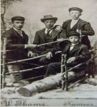

Lovise og Håkon sin slekt og familie
Lovise f. Eggan og Håkon Wahl
Personside 728
Marius Olsen Buøy
M, #18178, f. 29 april 1907, d. 1937
Foreldre
| Far | Olaf Johan Olsen Buøy (f. 10 september 1878, d. 2 juni 1966) |
| Mor | Marie Lorentse Gerhardsdatter Dalin (f. 19 april 1882, d. 3 februar 1960) |
Familie: Hjørdis Pauline Binderø (f. 5 august 1912, d. 13 april 2006)
| Datter | Ragnhild Sofie Olsen+ |
| Datter | Marianne Olsen |
Biografi
Marius Olsen Buøy ble født den 29 april 1907 på/i Buøya, Vikna, Nord-Trøndelag. Han giftet seg med Hjørdis Pauline Binderø den 4 juli 1931 på/i Garstad kirke, Vikna, Nord-Trøndelag. Han døde under vinterfisket, sammen med broren Osvald da båten deres ble trukket ned i et grunnbrott i 1937 på/i Vikna, Nord-Trøndelag.
Marius Olsen Buøy was also known as Marius Buøy. Ved innføring av vielen i kirkeboka er det notert at brudgommen ikke tilhører noe kirkesamfunn. Videre at bruden har foreldrenes samtykke (hun var enda ikke myndig.)
| Sist redigert | 17 juli 2025 16:40:13 |
| Slektskap | 6-menning 3 ganger forskjøvet til Håkon Wahl |
Hjørdis Pauline Binderø
K, #18179, f. 5 august 1912, d. 13 april 2006
Foreldre
| Far | August Henry Pettersen Binderø (f. 7 desember 1884, d. 1 november 1961) |
| Mor | Alfrida Eugenie Albertsdatter Storsul (f. 7 juni 1885, d. 5 mai 1945) |
Familie: Marius Olsen Buøy (f. 29 april 1907, d. 1937)
| Datter | Ragnhild Sofie Olsen+ |
| Datter | Marianne Olsen |
Biografi
Hjørdis Pauline Binderø ble født den 5 august 1912 på/i Binnerøy, Vikna, Nord-Trøndelag. Hun giftet seg med Marius Olsen Buøy den 4 juli 1931 på/i Garstad kirke, Vikna, Nord-Trøndelag. Hun døde den 13 april 2006 på/i Oslo. Hun ble gravlagt den 26 april 2006 på/i Høybråten kirkegård, Oslo.
Hjørdis Pauline Binderø was also known as Hjørdis Olsen. Hun ble døpt den 8 juni 1913 på/i Vikna, Nord-Trøndelag. Hun ble konfirmert den 17 juli 1927 på/i Garstad kirke, Vikna, Nord-Trøndelag.
| Sist redigert | 17 juli 2025 17:05:58 |
Ole Mathæus Johansen Opdal
M, #18193, f. 3 november 1915, d. 6 desember 1995
Foreldre
| Far | Johan Olsen Opdal (f. 20 august 1889, d. 8 desember 1966) |
| Mor | Ingrid Larssen (f. 21 september 1888, d. 22 april 1969) |
Biografi
Ole Mathæus Johansen Opdal ble født den 3 november 1915 på/i Opdal 32/1, Opdal, Overhalla, Nord-Trøndelag. Han døde den 6 desember 1995 på/i Skage, Overhalla, Nord-Trøndelag. Han ble gravlagt den 13 desember 1995 på/i Skage kirkegård, Overhalla, Nord-Trøndelag.
Ole Mathæus Johansen Opdal was also known as Ole Matheus Opdal.
| Sist redigert | 23 august 2025 16:24:26 |
| Slektskap | 7-menning 2 ganger forskjøvet til Håkon Wahl |
Olea Johannesdatter Ekker
K, #18194, f. omtrent 1820
Biografi
Olea Johannesdatter Ekker ble født omtrent 1820 på/i Grong, Nord-Trøndelag. Hun giftet seg med Peder Bernhoff Carlsen Bjørum. Hun døde på/i Bjørum, Vemundvik, Namsos, Nord-Trøndelag.
| Sist redigert | 20 mars 2013 00:00:00 |
Helge Edmund Guntvedt
M, #18198, f. 23 mai 1882, d. 5 juli 1939
Foreldre
| Far | Helge Thorkelsen Guntvedt (f. 28 april 1852, d. 9 februar 1930) |
| Mor | Elen Anna Torgersdatter (f. 27 juli 1850, d. 24 november 1884) |
Familie 1: Ingeborg Kristine Westgård (f. 9 oktober 1877, d. 21 januar 1961)
| Datter | Aslaug Brikselli (f. 19 januar 1901, d. mai 1932) |
Familie 2: Oline Kristiansdatter Setran (f. 14 januar 1886, d. 10 mars 1947)
| Sønn | Egil Arthur Guntvedt+ (f. 18 desember 1904, d. 16 oktober 1962) |
| Datter | Borghild Kristine Guntvedt+ (f. 23 september 1906, d. 6 mars 1962) |
| Datter | Helga Alette Guntvedt+ (f. 12 juni 1909, d. 28 desember 1990) |
| Sønn | Magne Guntvedt+ (f. 6 september 1912, d. 11 oktober 1985) |
| Sønn | Torkel Guntvedt+ (f. 6 april 1916, d. 19 oktober 1977) |
| Sønn | Oddleif Normann Guntvedt+ (f. 7 august 1918, d. 12 mars 1978) |
| Datter | Inger Guntvedt (f. 5 oktober 1921, d. 1 oktober 2001) |
Biografi
Helge Edmund Guntvedt ble født den 23 mai 1882 på/i Lund, Nærøy, Nord-Trøndelag. Han giftet seg med Oline Kristiansdatter Setran. Han døde den 5 juli 1939 på/i Nord-Trøndelag.
| Sist redigert | 7 februar 2019 00:00:00 |
Oline Kristiansdatter Setran
K, #18199, f. 14 januar 1886, d. 10 mars 1947
Foreldre
| Far | Kristian Andreassen Hestvik (f. 30 januar 1854, d. 30 oktober 1938) |
| Mor | Elen Boletta Olsdatter (f. 21 august 1857, d. 10 februar 1931) |
Familie: Helge Edmund Guntvedt (f. 23 mai 1882, d. 5 juli 1939)
| Sønn | Egil Arthur Guntvedt+ (f. 18 desember 1904, d. 16 oktober 1962) |
| Datter | Borghild Kristine Guntvedt+ (f. 23 september 1906, d. 6 mars 1962) |
| Datter | Helga Alette Guntvedt+ (f. 12 juni 1909, d. 28 desember 1990) |
| Sønn | Magne Guntvedt+ (f. 6 september 1912, d. 11 oktober 1985) |
| Sønn | Torkel Guntvedt+ (f. 6 april 1916, d. 19 oktober 1977) |
| Sønn | Oddleif Normann Guntvedt+ (f. 7 august 1918, d. 12 mars 1978) |
| Datter | Inger Guntvedt (f. 5 oktober 1921, d. 1 oktober 2001) |
Biografi
Oline Kristiansdatter Setran ble født den 14 januar 1886 på/i Galtvik; Kolvereid, Nærøy, Nord-Trøndelag. Hun giftet seg med Helge Edmund Guntvedt. Hun døde den 10 mars 1947 på/i Nord-Trøndelag.
Oline Kristiansdatter Setran was also known as Oline Guntvedt.
| Sist redigert | 7 februar 2019 00:00:00 |
| Slektskap | 7-menning 2 ganger forskjøvet til Håkon Wahl |
Kristian Andreassen Hestvik
M, #18200, f. 30 januar 1854, d. 30 oktober 1938
Foreldre
| Far | Andreas Kornelius Kristoffersen Hestvik (f. 24 februar 1831, d. 15 mai 1910) |
| Mor | Anna Johanne Johannesdatter Møinichen (f. 2 januar 1832, d. 13 november 1915) |
Familie: Elen Boletta Olsdatter (f. 21 august 1857, d. 10 februar 1931)
| Datter | Nanna Johanna Kristiansdatter Setran+ (f. 20 februar 1879, d. 2 desember 1923) |
| Datter | Anna Kristine Kristiansdatter Setran (f. 27 august 1881, d. 19 juli 1956) |
| Datter | Oline Kristiansdatter Setran+ (f. 14 januar 1886, d. 10 mars 1947) |
| Sønn | Kristoffer Bornemann Kristiansen Sætran (f. 2 februar 1888, d. 12 november 1957) |
| Sønn | Hjalmar Arthur Kristiansen Sætran+ (f. 13 februar 1893, d. 29 mars 1970) |
| Datter | Margit Johanne Kristiansdatter Setran+ (f. 11 desember 1900, d. 7 september 1989) |
{kind=link}

Adolf Bergum, Kristian Hestvik, Einar Lien. Foran-Martin Lien

Biografi
Kristian Andreassen Hestvik ble født den 30 januar 1854 på/i Nærøy, Nord-Trøndelag. Han giftet seg med Elen Boletta Olsdatter den 30 januar 1879. Han døde den 30 oktober 1938 på/i Nærøy, Nord-Trøndelag.
Kristian Andreassen Hestvik was also known as Kristian Galtnessetran. Han kjøpte den 8 februar 1883 Galtnes 9/1, Galtvig; Kolvereid, Nærøy, Nord-Trøndelag.
| Sist redigert | 16 august 2024 21:41:59 |
| Slektskap | 6-menning 3 ganger forskjøvet til Håkon Wahl |